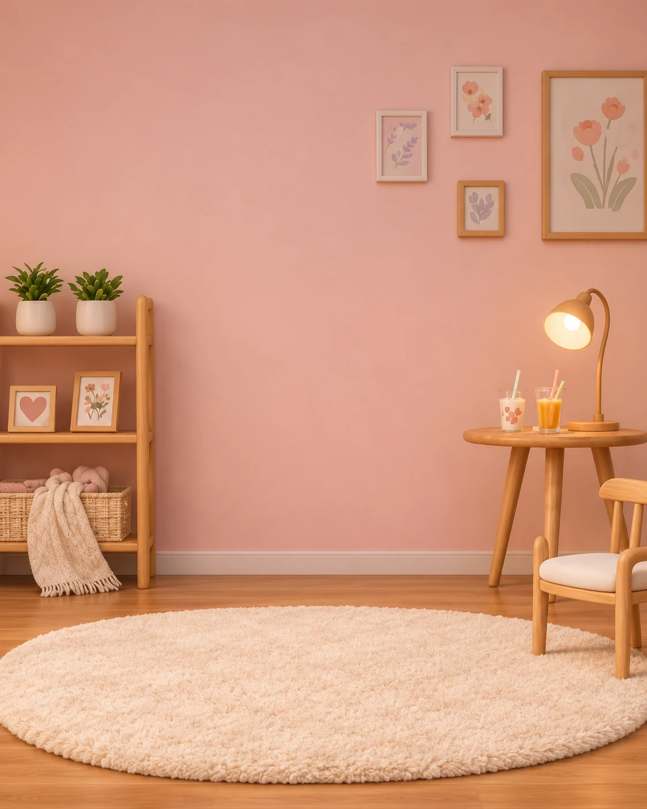

换装角色与室内场景
竖屏画面把粉发角色放在中央，让观众先看到整体穿搭，再看清贝雷帽、针织开衫和格纹裙这些细节。室内场景延续柔和的粉色调，家具和装饰分布在两侧，交代换装发生的空间，也给角色的完整轮廓留出位置。这样环境有足够的细节，观众也能把注意力放在衣服的搭配上。



以粉发卡通角色和换装主题呈现游戏内容。
点击图片放大查看
竖屏画面把粉发角色放在中央，让观众先看到整体穿搭，再看清贝雷帽、针织开衫和格纹裙这些细节。室内场景延续柔和的粉色调，家具和装饰分布在两侧，交代换装发生的空间，也给角色的完整轮廓留出位置。这样环境有足够的细节，观众也能把注意力放在衣服的搭配上。
